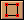
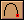
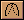

教程 2 - 绘图
介绍
这个教程介绍了Moho中绘图工具的使用方法。你将由简到繁绘制一些不同的物体。而教程3将基于你在这个教程中绘制的内容，来教给你如何对它们进行填充，做好动画的准备工作，真正让它们动起来。
创建背景
双击Moho图标运行Moho，如果Moho已经运行，从菜单选择 File->New 以创建一个新文件。从菜单选择 File->Project Settings... 命令，并且点击背景色(Background Color) 方框区域。选择一种好看的天蓝色作为你的作品的背景颜色。选择完成后按下OK按钮确定。
回到主画面，在工具条上选择绘制方形工具  。在工作区中点击并拖动鼠标创建一个长方形，如下图所示：
我们要把这个长方形变成小山的形状。到现在为止，这座“山”看上去过于平整^_^，所以我们需要调整一下。在工具条中选择增加节点工具  。在长方形的上面的边缘上点击并向上拖动鼠标：
现在你应该做出了一个如下图所示的图形，如果不是，从菜单中选择 Edit->Undo，然后再试一次。注意一定要在长方形的边缘上点击并拖动鼠标。
在上边缘的右边再次点击并向下拖动鼠标，图形将变为如下图所示的样子：
为了便于以后的工作，我们将这个图层赋予一个新的名字。在图层面板中双击这个层(现在我们的作品中仅仅有这一个层)。
在出现的对话框中的"Layer name"项中输入"Hills"，然后点击OK按钮确认。如果你愿意，现在应该是保存我们这个作品的时候了(否则因为死机或者停电导致你的工作前功尽弃，可不要怨我)。从菜单中选择 File->Save As...，给你的作品起名为"Tutorial 2"后保存。
创建一个新层
在层面板中点击新建层按钮  以创建一个新层。在弹出的菜单中选择"Vector Layer"。双击这个新层，把它改名为"Clouds"。
以创建一个新层。在弹出的菜单中选择"Vector Layer"。双击这个新层，把它改名为"Clouds"。
选择增加点工具 ，在工作区中点击并拖动鼠标，创建一个如下图所示的线段：
松开鼠标，在紧挨着刚创建的线段的末端的位置再次点击并拖动鼠标绘制新的曲线，Moho会自动连接这两条曲线，如下图所示：
继续创建曲线，直到变成如下图所示的样子：
每次创建新的曲线时，一定要紧挨着上次创建的曲线的末端，距离过远的话，两条曲线就不会自动连接起来，如果出现这样的错误，从菜单中选择 Edit->Undo 取消操作后重新绘制。
现在我们来介绍一下将两个节点焊接(welding)到一起的方法。焊接主要用于将两条曲线合二为一以封闭曲线，或者使其中的一条变成另外一条的一个分支。我们下面创建一条新的曲线，并且把它焊接到上一步绘制的曲线上。在离开上一步中绘制的曲线比较远的地方点击并拖动鼠标，一直拖动到我们上一步绘制的曲线的倒数第二个节点上，不要松开鼠标，按下空格键即可将这两点焊接到一起。如果不是很明白，下面的图例应该对你有所帮助：
当你成功的绘制出新的曲线，并把它和上一步中的曲线焊接到一起后，效果应如下图所示：
继续延长这个新创建的曲线，记住，只要在曲线的末端附近点击并拖动鼠标即可。
继续延长第二条曲线，最后，将第一条曲线的第一点焊接到第二条曲线的倒数第二个节点上，效果如下图所示：
我们再来制作一片云彩，从菜单中选择 Edit->Select All，再选择 Edit->Copy，Edit->Paste。这样你就把这片云彩复制了一份，但是看不出来，因为当你从剪贴板上复制物体的时候，复制的对象自动重叠在原来对象的正上方。从工具条上选择移动工具
 ，在云彩上点击并拖动鼠标，将这个复制的新云彩移动到屏幕的右方，如下图所示：
，在云彩上点击并拖动鼠标，将这个复制的新云彩移动到屏幕的右方，如下图所示：
选择缩放工具 ，在新云彩上点击并拖动鼠标，把它缩小一些，缩放工具可以横向或者纵向缩放对象，但是我们这里并不希望把这片新云彩变得短粗或者细长，所以当拖动鼠标时，请同时按下shift键，这样就可以在横竖方向上以相同的比例进行缩放，仅仅缩小云彩，而不改变它的整体形状，如下图所示：.
接下来从菜单中选择 Edit->Select None(或者按下回车键)取消选择所有的节点。再次选择移动工具  ，点击并移动第二片云彩的单个节点，来改变这个云彩的形状，这样两片云彩就不至于看起来雷同。
，点击并移动第二片云彩的单个节点，来改变这个云彩的形状，这样两片云彩就不至于看起来雷同。
放置一棵树
不错，我们进行的很顺利，可是画面上似乎还需要一些植物。在层面板上点击新建层工具  ，在弹出的菜单中选择"Vector Layer"，再创建一个新层。双击这个层，把它改名为"Tree"。
，在弹出的菜单中选择"Vector Layer"，再创建一个新层。双击这个层，把它改名为"Tree"。
选择增加节点工具 ，按照我们绘制云彩的方法，画出一个树干。你需要记住几个技巧：第一，如果犯了错误，可以使用菜单
Edit->Undo 命令取消操作。第二，在绘制曲线的过程中，你也可以通过选择移动工具  来移动节点的位置以改变对象的形状，而不需要等到全部画完后再修改。第三，你可以使用移动工具点击节点以选择它，如果你想删除一个节点的话，选择它，按下delete键即可。
来移动节点的位置以改变对象的形状，而不需要等到全部画完后再修改。第三，你可以使用移动工具点击节点以选择它，如果你想删除一个节点的话，选择它，按下delete键即可。
你可以随心所欲地创造你的树干，不一定刻板的按照下图的效果绘制：
有几个没有介绍过的工具，在你创建树干的过程中可能会对你有所帮助。移动画面工具 和缩放画面工具 。注意这两个工具并没有改变你绘制的对象的大小和位置，它们仅仅放大缩小或平移显示区域，以便你对一些细节的部分进行调整。需要重置显示区域的话从菜单中选择 View->Reset 即可。
另一个有用的工具是调整曲度工具  。 选择这个工具，你可以点击一个节点，通过拖动鼠标来改变它两侧的曲线的曲度。
这个教程中我们要绘制的最后部分就是这棵树的树冠。继续使用和创建云彩时一样的步骤即可。不过因为树冠和树干有一部分重叠在一起，你很容易在绘制树冠和树干重叠部分的时候，不小心给树干增加了新的节点。
避免这种情况有两种方法：第一，使用刚才介绍的缩放和平移显示区域工具，将树干顶部放大到整个画面，这样就可以避免点击到错误的位置。第二个办法就是在工作区空白的地方绘制树冠，完成后再使用移动对象工具把它移动到树干的上方。注意，当你需要移动树冠之前，先使用移动对象工具选择树冠的一个节点，然后从菜单中选择 Edit->Select Connected 命令以选择整个树冠，这样才能使用移动对象工具将其整个移动。
下图就是全部完成后的样子，我们这个教程也就到此为止了。下一个教程(教程3) 将讲解填充模式，你将学会如何为你在这个教程中绘制的所有对象分别设置颜色效果和风格。